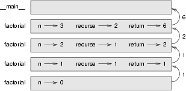

5.1 Return values
Some of the built-in functions we have used, such as the math functions, have produced results. Calling the function generates a new value, which we usually assign to a variable or use as part of an expression.
e = math.exp(1.0) height = radius * math.sin(angle)
But so far, none of the functions we have written has returned a value.
In this chapter, we are going to write functions that return values, which
we will call fruitful functions, for want of a better name.
The first example is area, which returns the area of a circle with
the given radius:
import math def area(radius): temp = math.pi * radius**2 return temp
We have seen the return statement before, but in a fruitful
function the return statement includes a
return value. This statement means: Return immediately
from this function and use the following expression as a return value.
The expression provided can be arbitrarily complicated, so we could have
written this function more concisely:
def area(radius): return math.pi * radius**2
On the other hand, temporary variables like
temp often make debugging easier.
Sometimes it is useful to have multiple return statements, one in each branch of a conditional:
def absolute_value(x): if x < 0: return -x else: return x
Since these return statements are in an alternative
conditional, only one will be executed. As soon as one is executed, the
function terminates without executing any subsequent statements.
Code that appears after a return statement, or any other place
the flow of execution can never reach, is called dead code.
In a fruitful function, it is a good idea to ensure that every possible path
through the program hits a return statement. For example:
def absolute_value(x): if x < 0: return -x elif x > 0: return x
This program is not correct because if x happens to be 0,
neither condition is true, and the function ends without hitting a
return statement. In this case, the return value is a special
value called None:
>>> print absolute_value(0) None
None is the unique value of a type called the
NoneType:
>>> type(None) <type 'NoneType'>
5.2 Program development
At this point, you should be able to look at complete functions and tell what they do. Also, if you have been doing the exercises, you have written some small functions. As you write larger functions, you might start to have more difficulty, especially with runtime and semantic errors.
To deal with increasingly complex programs, we are going to suggest a technique called incremental development. The goal of incremental development is to avoid long debugging sessions by adding and testing only a small amount of code at a time.
As an example, suppose you want to find the distance between two points, given by the coordinates (x1, y1) and (x2, y2). By the Pythagorean theorem, the distance is:
distance = sqrt((x2 - x1)2 + (y2 - y1)2)
The first step is to consider what a distance function should
look like in Python. In other words, what are the inputs (parameters) and what
is the output (return value)?
In this case, the two points are the inputs, which we can represent using four parameters. The return value is the distance, which is a floating-point value.
Already we can write an outline of the function:
def distance(x1, y1, x2, y2): return 0.0
Obviously, this version of the function doesn't compute distances; it always returns zero. But it is syntactically correct, and it will run, which means that we can test it before we make it more complicated.
To test the new function, we call it with sample values:
>>> distance(1, 2, 4, 6) 0.0
We chose these values so that the horizontal distance equals 3 and the vertical distance equals 4; that way, the result is 5 (the hypotenuse of a 3-4-5 triangle). When testing a function, it is useful to know the right answer.
At this point we have confirmed that the function is syntactically correct, and we can start adding lines of code. After each incremental change, we test the function again. If an error occurs at any point, we know where it must be---in the last line we added.
A logical first step in the computation is to find the differences
x2 - x1 and y2 - y1. We will
store those values in temporary variables named dx and
dy and print them.
def distance(x1, y1, x2, y2): dx = x2 - x1 dy = y2 - y1 print "dx is", dx print "dy is", dy return 0.0
If the function is working, the outputs should be 3 and 4. If so, we know that the function is getting the right parameters and performing the first computation correctly. If not, there are only a few lines to check.
Next we compute the sum of squares of dx and
dy:
def distance(x1, y1, x2, y2): dx = x2 - x1 dy = y2 - y1 dsquared = dx**2 + dy**2 print "dsquared is: ", dsquared return 0.0
Notice that we removed the print statements we wrote in the
previous step. Code like that is called scaffolding because
it is helpful for building the program but is not part of the final product.
Again, we would run the program at this stage and check the output (which should be 25).
Finally, if we have imported the math module, we can use the
sqrt function to compute and return the result:
def distance(x1, y1, x2, y2): dx = x2 - x1 dy = y2 - y1 dsquared = dx**2 + dy**2 result = math.sqrt(dsquared) return result
If that works correctly, you are done. Otherwise, you might want to print
the value of result before the return statement.
When you start out, you should add only a line or two of code at a time. As you gain more experience, you might find yourself writing and debugging bigger chunks. Either way, the incremental development process can save you a lot of debugging time.
The key aspects of the process are:
- Start with a working program and make small incremental changes. At any point, if there is an error, you will know exactly where it is.
- Use temporary variables to hold intermediate values so you can output and check them.
- Once the program is working, you might want to remove some of the scaffolding or consolidate multiple statements into compound expressions, but only if it does not make the program difficult to read.
5.3 Composition
As you should expect by now, you can call one function from within another. This ability is called composition.
As an example, we'll write a function that takes two points, the center of the circle and a point on the perimeter, and computes the area of the circle.
Assume that the center point is stored in the variables xc and
yc, and the perimeter point is in xp and
yp. The first step is to find the radius of the circle, which is
the distance between the two points. Fortunately, there is a function,
distance, that does that:
radius = distance(xc, yc, xp, yp)
The second step is to find the area of a circle with that radius and return it:
result = area(radius) return result
Wrapping that up in a function, we get:
def area2(xc, yc, xp, yp): radius = distance(xc, yc, xp, yp) result = area(radius) return result
We called this function area2 to distinguish it from the
area function defined earlier. There can only be one function
with a given name within a given module.
The temporary variables radius and result are
useful for development and debugging, but once the program is working, we can
make it more concise by composing the function calls:
def area2(xc, yc, xp, yp): return area(distance(xc, yc, xp, yp))
5.4 Boolean functions
Functions can return boolean values, which is often convenient for hiding complicated tests inside functions. For example:
def is_divisible(x, y): if x % y == 0: return True else: return False
The name of this function is is_divisible. It is common to give
boolean functions names that sound like yes/no questions.
is_divisible returns either True or False
to indicate whether the x is or is not divisible by y.
We can make the function more concise by taking advantage of the fact that
the condition of the if statement is itself a boolean expression.
We can return it directly, avoiding the if statement altogether:
def is_divisible(x, y): return x % y == 0
This session shows the new function in action:
>>> is_divisible(6, 4) False >>> is_divisible(6, 3) True
Boolean functions are often used in conditional statements:
if is_divisible(x, y): print "x is divisible by y" else: print "x is not divisible by y"
It might be tempting to write something like:
if is_divisible(x, y) == True:
But the extra comparison is unnecessary.
5.5 More recursion
So far, you have only learned a small subset of Python, but you might be interested to know that this subset is a complete programming language, which means that anything that can be computed can be expressed in this language. Any program ever written could be rewritten using only the language features you have learned so far (actually, you would need a few commands to control devices like the keyboard, mouse, disks, etc., but that's all).
Proving that claim is a nontrivial exercise first accomplished by Alan Turing, one of the first computer scientists (some would argue that he was a mathematician, but a lot of early computer scientists started as mathematicians). Accordingly, it is known as the Turing Thesis. If you take a course on the Theory of Computation, you will have a chance to see the proof.
To give you an idea of what you can do with the tools you have learned so far, we'll evaluate a few recursively defined mathematical functions. A recursive definition is similar to a circular definition, in the sense that the definition contains a reference to the thing being defined. A truly circular definition is not very useful:
- frabjuous:
- An adjective used to describe something that is frabjuous.
If you saw that definition in the dictionary, you might be annoyed. On the other hand, if you looked up the definition of the mathematical function factorial, you might get something like this:
0! = 1
n! = n (n-1)!
This definition says that the factorial of 0 is 1, and the factorial of any other value, n, is n multiplied by the factorial of n-1.
So 3! is 3 times 2!, which is 2 times 1!, which is 1 times 0!. Putting it all together, 3! equals 3 times 2 times 1 times 1, which is 6.
If you can write a recursive definition of something, you can usually write
a Python program to evaluate it. The first step is to decide what the
parameters are for this function. With little effort, you should conclude that
factorial takes a single parameter:
def factorial(n):
If the argument happens to be 0, all we have to do is return 1:
def factorial(n): if n == 0: return 1
Otherwise, and this is the interesting part, we have to make a recursive call to find the factorial of n-1 and then multiply it by n:
def factorial(n): if n == 0: return 1 else: recurse = factorial(n-1) result = n * recurse return result
The flow of execution for this program is similar to the flow of
countdownin the last chapter. If we call factorial
with the value 3:
Since 3 is not 0, we take the second branch and calculate the factorial ofn-1...Since 2 is not 0, we take the second branch and calculate the factorial ofThe return value (2) is multiplied byn-1...Since 1 is not 0, we take the second branch and calculate the factorial ofThe return value (1) is multiplied byn-1...Since 0 is 0, we take the first branch and return 1 without making any more recursive calls.The return value (1) is multiplied byn, which is 1, and the result is returned.n, which is 2, and the result is returned.n, which is 3, and the result, 6, becomes the return value of the function call that started the whole process.
Here is what the stack diagram looks like for this sequence of function calls:
The return values are shown being passed back up the stack. In each frame,
the return value is the value of result, which is the product of
n and recurse.
Notice that in the last frame, the local variables recurse and
result do not exist, because the branch that creates them did not
execute.
5.6 Leap of faith
Following the flow of execution is one way to read programs, but it can
quickly become labyrinthine. An alternative is what we call the leap of
faith.
When you come to a function call, instead of following the flow of
execution, you assume that the function works correctly and returns
the appropriate value.
In fact, you are already practicing this leap of faith when you use built-in
functions. When you call math.cos or math.exp, you
don't examine the implementations of those functions. You just assume that
they work because the people who wrote the built-in libraries were good
programmers.
The same is true when you call one of your own functions. For example,
we wrote the function is_divisible that determines whether one
number is divisible by another. Once we have convinced ourselves that this
function is correct---by testing and examining the code---we can use the
function without looking at the code again.
The same is true of recursive programs. When you get to the recursive call,
instead of following the flow of execution, you should assume that the
recursive call works (yields the correct result) and then ask yourself,
Assuming that I can find the factorial of
In this case, it is clear that you can,
by multiplying by n-1, can I compute
the factorial of n?n.
Of course, it's a bit strange to assume that the function works correctly when you haven't finished writing it, but that's why it's called a leap of faith!
5.7 One more example
In the previous example, we used temporary variables to spell out the steps and to make the code easier to debug, but we could have saved a few lines:
def factorial(n): if n == 0: return 1 else: return n * factorial(n-1)
From now on, we will tend to use the more concise form, but we recommend that you use the more explicit version while you are developing code. When you have it working, you can tighten it up if you are feeling inspired.
After factorial, the most common example of a recursively
defined mathematical function is fibonacci, which has the
following definition:
fibonacci(0) = 1 fibonacci(1) = 1 fibonacci(n) = fibonacci(n-1) + fibonacci(n-2);
Translated into Python, it looks like this:
def fibonacci(n): if n == 0 or n == 1: return 1 else: return fibonacci(n-1) + fibonacci(n-2)
If you try to follow the flow of execution here, even for fairly small
values of n, your head explodes. But according to the leap of
faith, if you assume that the two recursive calls work correctly, then it is
clear that you get the right result by adding them together.
5.8 Checking types
What happens if we call factorial and give it 1.5 as an
argument?
>>> factorial (1.5) ... RuntimeError: maximum recursion depth exceeded in cmp
It looks like an infinite recursion. But how can that be? There is a base
case---when n == 0. The problem is that the values of
nmiss the base case.
In the first recursive call, the value of n is 0.5. In the
next, it is -0.5. From there, it gets smaller and smaller, but it will never
be 0.
We have two choices. We can try to generalize the factorial
function to work with floating-point numbers, or we can make
factorial check the type of its parameter. The first option is
called the gamma function and it's a little beyond the scope of this book. So
we'll go for the second.
We can use type to compare the type of the parameter to the
type we are expecting. While we're at it, we also make sure the parameter is
positive:
def factorial(n): if type(n) != int: print "Factorial is only defined for integers." return -1 if n < 0: print "Factorial is only defined for positive integers." return -1 if n == 0: return 1 else: return n * factorial(n-1)
Now we have three base cases. The first catches nonintegers. The second catches negative integers. In both cases, the program prints an error message and returns a special value, -1, to indicate that something went wrong:
>>> factorial("fred")
Factorial is only defined for integers.
-1
>>> factorial(-2)
Factorial is only defined for positive integers.
-1
If we get past both checks, then we know that n is a positive
integer, and we can prove that the recursion terminates.
This program demonstrates a pattern sometimes called a guardian. The first two conditionals act as guardians, protecting the code that follows from values that might cause an error. The guardians make it possible to prove the correctness of the code.
5.9 Glossary
- fruitful function:
- A function that yields a return value.
- return value:
- The value provided as the result of a function call.
- temporary variable:
- A variable used to store an intermediate value in a complex calculation.
- dead code:
- Part of a program that can never be executed, often because it appears
after a
returnstatement. None:- A special Python value returned by functions that have no return statement, or a return statement without an argument.
- incremental development:
- A program development plan intended to avoid debugging by adding and testing only a small amount of code at a time.
- scaffolding:
- Code that is used during program development but is not part of the final version.
- guardian:
- A condition that checks for and handles circumstances that might cause an error.
5.10 Exercises
- Write a
comparefunction that returns1ifx > y,0ifx == y, and-1ifx < y. - Use incremental development to write a function called
hypotenusethat returns the length of the hypotenuse of a right triangle given the lengths of the two legs as parameters. Record each stage of the incremental development process as you go. - Write a function
slope(x1, y1, x2, y2)that returns the slope of the line through the points (x1, y1) and (x2, y2). Then use this function in a function calledintercept(x1, y1, x2, y2)that returns the y-intercept of the line through the points(x1, y1)and(x2, y2). - Write a function called
isEventhat takes an integer as an argument and returnsTrueif the argument is an even number andFalseif it is odd. - Now write the function
isOddso that it uses a call toisEvento determine if its argument is an odd integer. - Write a function,
isFactor, with two parameters,nandf, which returnsTruewhenfis a factor ofn, andFalseotherwise. - Write a function,
isMultiple, with two parameters,nandm, which returnsTruewhenmis a multiple ofn, andFalseotherwise. - As an exercise, write a function
isBetween(x, y, z)that returnsTrueif y < x < z orFalseotherwise.